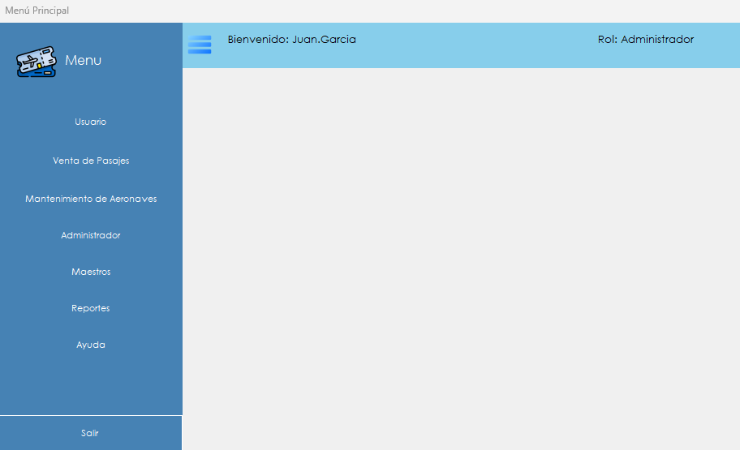

Es la pantalla desde la que se accede a todos los módulos del sistema y la que permanece abierta durante toda la sesión.
El menú principal es el centro del sistema. Muestra quién tiene la sesión iniciada y con qué rol, y agrupa el acceso a los módulos en seis secciones. Todas las pantallas se abren desde acá y vuelven acá al cerrarse.
Se abre automáticamente al iniciar sesión correctamente. Ver Inicio de sesión.

| Zona | Qué muestra |
|---|---|
| Barra superior | El nombre del usuario que tiene la sesión iniciada y el rol con el que ingresó. Sirve para verificar de un vistazo con qué permisos se está trabajando. |
| Panel izquierdo | Las secciones del sistema. Al hacer clic en una, se despliegan las opciones que contiene. |
| Área central | Queda vacía. Las pantallas del sistema se abren como ventanas propias por encima del menú. |
| Sección | Opciones que contiene |
|---|---|
| Usuario | Cambiar Contraseña, Cambiar Idioma y Relogin. |
| Venta de Pasajes | Vender Pasaje, para armar una reserva, y Generar Pasaje, para cobrarla y emitir los pasajes. |
| Mantenimiento de Aeronaves | Generar Orden de Trabajo, Registrar Intervención y Certificar Intervención. |
| Administrador | Gestión de Usuarios, Bitácora de Eventos, Gestión de Perfiles, que a su vez contiene Administrador de Roles y Administrador de Familias, y Gestión de Respaldos. |
| Maestros | Maestro de Aeronaves y Maestro de Vuelos. |
| Reportes | Comprobantes de Pasaje, Certificados de Intervención y Analítica de Mantenimiento. |
| Ayuda | Abre esta ayuda en el navegador, en el índice general. |
| Salir | Cierra la sesión y termina AeroManager. |
Por qué no veo todas las secciones. El menú muestra únicamente las opciones habilitadas por las patentes del rol del usuario, de modo que dos personas con roles distintos ven menús distintos. Las secciones Ayuda y Salir están siempre disponibles. Si falta una opción que debería estar, hay que pedirle al administrador que revise el rol desde Administrador de Roles.
El botón Ayuda del panel izquierdo abre el índice general de esta ayuda en el navegador. Desde cualquier pantalla del sistema también se puede presionar la tecla F1 para abrir directamente el tema correspondiente a esa pantalla, sin pasar por el índice.
AeroManager mantiene una única sesión activa mientras el programa está en ejecución. La opción Usuario › Relogin vuelve a mostrar la pantalla de inicio de sesión, pero el sistema no permite que se abra una segunda sesión sobre la que ya está activa.
Atención. Para trabajar con otro usuario hay que salir del sistema con el botón Salir y volver a abrir AeroManager. Esto es intencional: garantiza que todas las operaciones de la bitácora de eventos queden atribuidas sin ambigüedad al usuario que realmente las hizo.
El botón Salir del panel izquierdo cierra la sesión y termina el programa. Conviene usarlo siempre al terminar de trabajar, en lugar de dejar el sistema abierto, porque cualquier operación realizada desde esa sesión queda registrada a nombre del usuario que ingresó.